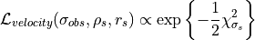
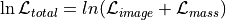

DYNFILE
dyntype
Set the type of profile used to do the calculations. In the current version of the code, this optimization procedure is only working with the NFW profile. Then you need to use 12.
dynnumber
Can be 1, 2 or 3. See below.
velocity
The measure velocity dispersion of the cluster
e_velocity
The associated error of the velocity dispersion.
indmass
The mass of cluster. Can be the 2D mass, or the 3D mass, see below.
e_indmass
The associated error of the mass.
refradius_kpc
The radius at which the mass is measured. In kiloparsec.
Additional remarks on the dynfile identifier
To constrain a model using strong lensing and dynamical data, we can proceed in diferent ways, but in any case we need to define a new likelihood. In the code we have implemented two forms to do the task.
First method (dynnumber 1 and dynnumber 2)
Given the observed velocity dispersion of a galaxy cluster, , and the velocity dispersion associated with the NFW profile, , we have the likelihood:

where is the uncertainty in the measurement of the velocity. This is direct because in the code:
and can be related with the observed velocity dispersion if we define (see Verdugo et al. 2007):
thus
Therefore, since the two techniques are independent, the total likelihood for a given set of free parameters is just the product of the lensing ( ) and velocity dispersion likelihoods:
) and velocity dispersion likelihoods:
If in addition we have an independent measurement of the 2D mass of the cluster (for example, WL or X-ray), we can define a new likelihood in terms of the 2D mass of the NFW profile, which can be obtained analitically (see for example Verdugo et al. 2011).
where  is the uncertainty in the measurement of the mass. Similarly
is the uncertainty in the measurement of the mass. Similarly
Caveats: With dynnumber=1 the code uses only the velocity dispersion to do the optimization. With dynnumber=2, the code uses both likelihoods, you need to give the observed velocity and the independent measurement of the mass. With the use of this identifier (i.e., dynnumber = 3) the code works very slow, for every set of parameters the 2D mass is computed and the calculations involve the solution of two integrals. To use only the mass as constraint see the next method.
Second method (dynnumber 3).
In this case we have an independent measurement of the 3D mass of the cluster that could be calculated with the velocity dispersion of the galaxies, or WL or X-ray. Thus,
and $$
In this case the code works faster since the 3D mass of the NFW profile is easy to compute.